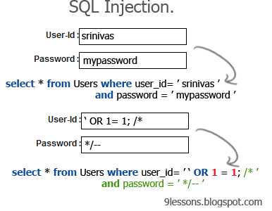

What is SQL Injection?
SQL Injection is a technique used to attack data-driven applications. The basic concept behind SQL Injection is that someone 'injects' malicious SQL statements into code via an entry field, like a text box on a website asking you to enter your user name.
 Why is SQL Injection a problem?
SQL Injection can have catastrophic effects. A successful SQL Injection attack could result in a user being able to print out an entire table that is supposed to be confidential, or being able to delete an entire table. Imagine you are running a website that stores user names and associated credit card numbers. What if someone could access that entire table that stores credit card numbers and user names via a text box on your webpage? Using SQL Injection, an attacker could potentially do just that.
What can be done to combat this issue?
One of the best ways to prevent SQL Injections is to escape any characters that have 'special meaning' in SQL, such as single quotes. The best way to go about ensuring you've escaped any special characters is to create a blacklist of special characters, and implement a method that escapes any special characters. This method is then called on all user input before sending a query.
Another way to mitigate SQL Injections is to use blind variables instead of directly embedding user input into the statement. Blind variables store only values of a given type, and cannot store SQL fragments. This means if someone were to enter malicious SQL code, it would just be treated as a strage parameter value.
Finally, input can be checked to make sure it matches the type of input that is expected. This means if the user is supposed to enter an Integer, we can check what is actually input to ensure it matches the Integer type.